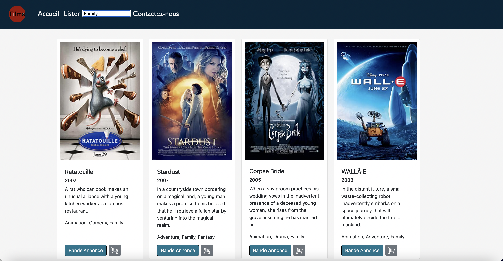

-
Normal Car Normal City
This is project has all been modelled in Blender:
The homes, the two buildings, the road, the trees, the sidewalk and the sea, have all been made by hand.
The car, ball and trees were generated using Blenderkit.
This animation was made using key frames to move the car, the ball and the camera angles.

Here is a video tour of my Blender Project
-
FilmsForFun
FilmsForFun acts as a site to "rent" movies. Upon opening the site shows the top 15 films, then by clicking Lister the site will list all the movies.
You are able to sort through the categories and it will list the movies from that categorie.
By clicking the shopping cart, it will bring you to amazon be able to buy/rent the movies and the "Bande Annonce" button, will show you the movie's trailer.
The HTML file making up the layout of the website. The Navbars, the Text, using fonctions to filter through the Movies, linking up the css, javascript and the HTML.
The JavaScript makes up most of the inner workings for the site, using functions to create the cards and linking them to the list of films and being able to sort through the categories.
-
Francophonie by U-Nico - Music Video

Nico Butel-Marchildon & Francis Marchildon
Date of Completion: 07/23/2022
Duration: 2:41
Medium: Video - Filmed on and Iphone with a Gimbal - Edited in Premiere Pro - Music made in Logic Pro X.
Contribution: I Directed, Edited and guided my father through each shot we filmed on my family’s farm.
I also produced, recorded, mixed and mastered and made the album cover for this song.
A portion of this song I wrote for La fondation fransaskoise, and their Francothon program to help out the community.
The Fondation fransaskoise is a registered charitable organization whose goal is to provide financial assistance to programs intended for Fransaskois across the province (Saskatchewan).
-
3 Part Project

This project has 3 core parts:
Part 1. The first part asks the user to input a value, then by clicking one of the four buttons the values are converted. For exemple: If you inputed 10 as your value and you pressed the 'Pouces vers cm' button it would convert your value from inches to centimetres.
Part 2. Lets you input a name, then it asks you to input a value from 1 to 6, when you press the button it will show your name in green at the size that you inputed. For exemple: If your name was John and you put 1, it would take your name and 1 and would display them in green at a size of an 'h1'
Part 3. Is essentially a menu and bill calculator for a fictional restaurant. You can pick from many options and the program will show and then add up the cost of your order (with taxes included)
-
Reebok Écolo
This video is a fantasy Reebok Commercial for a new eco-friendly shoe made from sustainable materials
This video was edited in Blender for a course at the University of Montreal. Enjoy!
-
ParaDit
Nico Butel-Marchildon
Date of completion: 01/14/2021
1920 × 1080 pixels Duration: 01:08 Medium: Animation/Video/Sound - Digital Drawing - Made in Procreate
Ambient track made entirely out of my voice in Ableton Live 11.
Video edited in Blender.
-
Essentially...You don't have a normal life

Nico Butel-Marchildon
Date of completion: 2021 3840 × 2160 pixels
Medium: Collage - This piece was made by cutting out and gluing physical cutouts from magazines and comic books onto a canvas, digitalizing them and adding personal photography, illustrations and graphic design as well,
all together is a beautiful intricate piece that always keeps you interested.
-
I SPY

Nico Butel-Marchildon
Date of completion: October 8th, 2021 5100 × 3300 pixels
Medium: Graphic Design - Photography + Adobe Photoshop 2021
I made this piece by using personal Photographs from my surroundings, then editing and manipulating them to fit into my beautifully strange world.
I SPY with my little eye, some cool art!
-
HiKO

Nico Butel-Marchildon
Date of completion: 08/19/2022
Size: 3000 x 3000 pixels
Medium: Collage - This piece puts forward my Ukrainian Heritage, as it was made from a combination of cutouts from old Ukrainian maps from my relatives in Kyiv and a photograph of myself as a child.